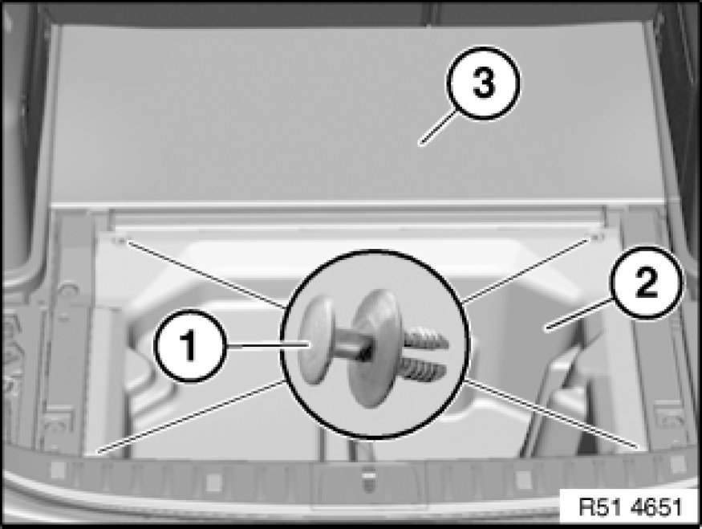
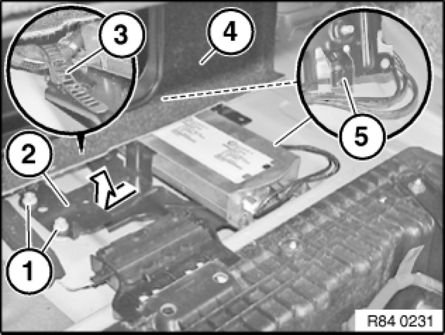
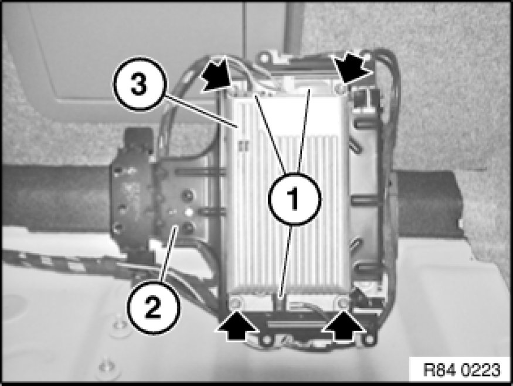

84 21 542 Removing and Installing/Replacing Hands-Free Charging Electronics (High)
84 21 542 - Removing and installing (replacing) hands-free charging electronics (High)

Important!
Read and comply with notes on protection against electrostatic damage (ESD protection) 61 35 ... Notes on ESD Protection (Electro Static Discharge).

Note:
Comply with notes and instructions on handling optical waveguides 61 00 ... Notes on Handling Optical Fibers.

Necessary preliminary tasks:
- Disconnect battery negative lead 61 20 900 Disconnecting and Connecting Battery Negative Lead
- Remove luggage compartment floor trim 51 47 101 Removing and Installing/Replacing Luggage Compartment Floor Trim Panel

E91:
Release retaining clips (1) and remove storage pan (2).
Fold panel (3) upwards.

Unscrew nuts (1).
Remove holder for telematics control unit / SES (2) in direction of arrow from body.
E88/E93:
Raise panel for luggage compartment partition (4) slightly and feed out holder for telematics control unit / SES (2) in direction of luggage compartment.
Release wiring harness fastener (3) from holder for telematics control unit / SES (2).
Installation Note:
Make sure guides (5) are correctly seated in associated body holders.
Make sure wiring harness is correctly laid.

Disconnect plug connection (1).
Release all nuts.
Remove hands-free charging electronics (3) from holder for telematics control unit / SES (2).

Replacement:
- Carry out vehicle programming/coding Programming and Relearning
- If necessary, log mobile phone on to vehicle